会师历史时间轴
会师地点战略决策
1936年9月，红二、四方面军即将进入甘肃，中央军委需选定一处战略要地实现三大主力会师。会宁北依黄河、南靠西兰公路，既是交通枢纽，又能北拒马家军、南防胡宗南，且群众基础深厚，成为理想选址。
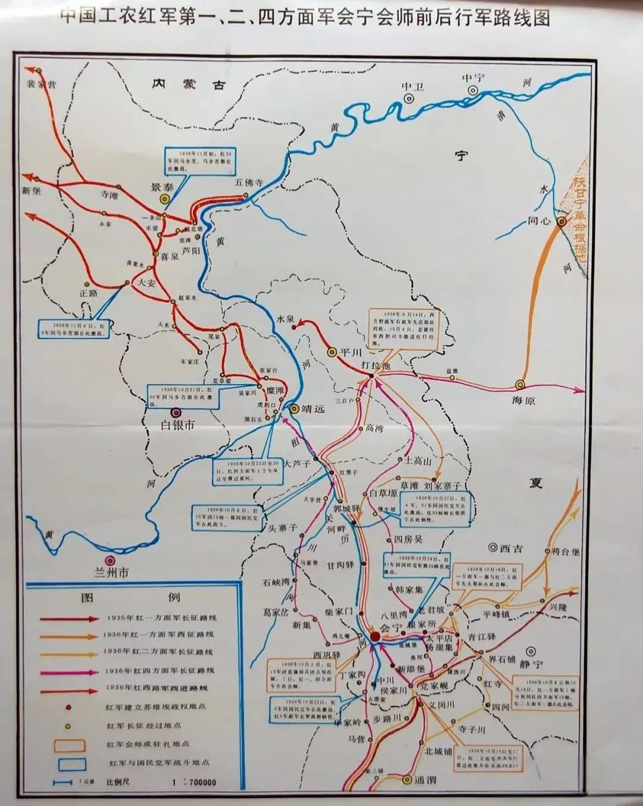
9月13日，周恩来致电红四方面军，提出"会宁地区会师为宜"；9月27日，毛泽东、周恩来再次致电张国焘，明确"以会宁为中心之地区，为三大主力会合之战略枢纽"；10月1日，红一方面军攻占会宁县城，为会师扫清障碍。
张国焘虽曾主张西进青海，但在中央反复劝说及红四方面军多数将领反对下，最终同意北上会宁。
会宁会师使红军三大主力集中兵力，摆脱了分散作战的被动局面，形成了强大的战略威慑力。同时，会师地点靠近陕北根据地，为红军后续改编为八路军、投身抗日战争奠定了地理和军事基础。
毛泽东后来评价："会宁会师，不是终点，而是新的起点。"
红一、红四方面军会师
1936年10月9日上午，红四方面军总指挥部在徐向前、陈昌浩率领下抵达会宁县城，红一方面军红一军团、红十五军团部分部队列队迎接。战士们相互拥抱、抛帽欢呼，不少分离两年多的老战友重逢，场面感人至深。

红一方面军参会部队：红一军团第1师、第2师，红十五军团第73师、第75师，总兵力约2.5万人；
红四方面军参会部队：红四方面军总部、第4军、第31军，总兵力约3万人；
会师后，两军在会宁县城召开联席会议，明确了后续行动部署。
红军进城后，严格执行"三大纪律八项注意"，不拿群众一针一线。会宁百姓自发组织起来，为红军送粮食、缝衣物、护理伤员。城西张大爷将家中仅有的30斤小麦全部捐献，城东李大妈带领妇女们连夜缝制了50多双布鞋。
红军则向群众宣传革命道理，分发地主浮财，建立了会宁县苏维埃政府。
会师联欢大会
10月10日上午，红一、红四方面军在会宁文庙大成殿召开联欢大会，参会人数达万人。大会流程包括：升国旗、奏军歌、宣读中央贺电、授旗仪式、文艺表演。
文艺表演中，红一方面军战士表演了《红军舞》，红四方面军战士演唱了《打土豪分田地》，群众代表献上了会宁民歌《绣金匾》。
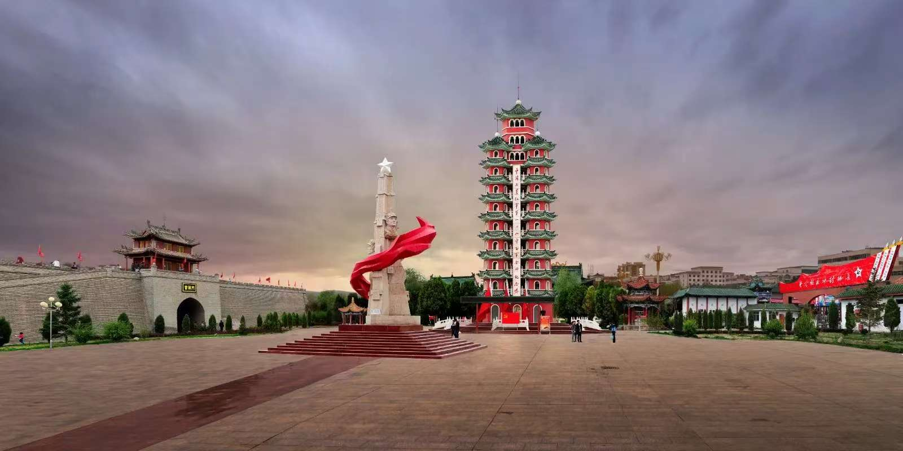
红一方面军代表聂荣臻在讲话中指出："三大主力会师，是中国革命的伟大胜利，从此红军将以更强大的力量抗击日本侵略者！"
红四方面军代表徐向前表示："我们坚决拥护中央北上抗日的战略方针，与红一方面军并肩作战，为解放全中国而奋斗！"
大会结束时，全体人员齐呼"红军万岁！""中国共产党万岁！"，口号声震彻会宁县城。
大会使用的红旗（现藏于国家博物馆）：长1.2米、宽0.8米，红布为底，用白布绣"中国工农红军三大主力会师纪念"字样，边缘有战斗中留下的弹孔；
大会会标（复制品）：木质结构，黑漆底，红漆书写"庆祝红军三大主力会师联欢大会"，原件于1937年红军东渡黄河时遗失。
以下为会师联欢大会的历史影像片段（修复版），记录了红军战士与群众共庆胜利的珍贵瞬间：
注：该视频由会宁红军长征胜利纪念馆提供，基于历史照片、文献资料修复还原，时长2分15秒。
红二方面军与红一方面军会师
1936年10月22日，红二方面军在贺龙、任弼时率领下，在宁夏将台堡（今属宁夏西吉县）与红一方面军红一军团会师。至此，红军三大主力全部会师，历时两年的长征宣告胜利结束。

会宁会师是中国革命史上的伟大里程碑，它粉碎了国民党反动派消灭红军的企图，保存了中国革命的骨干力量；确立了毛泽东同志在党中央和红军的领导地位，为中国革命的胜利奠定了组织基础；宣传了党的抗日主张，扩大了革命影响。
正如《中央为庆祝红一、二、四方面军大会师通电》所指出："全国主力红军的会合与进入抗日前线阵地，在中国与日本抗争的国际火线上，在全国国内政治关系上，将要起一个决定的作用了。"
长征历时：红一方面军（中央红军）1934年10月出发，1935年10月到达陕北，历时1年；红二、四方面军1935年11月出发，1936年10月会师，历时11个月；
总行程：三大主力累计行程超6万里，其中红一方面军行程2.5万里；
途经省份：福建、江西、广东、湖南、广西、贵州、云南、四川、西藏、甘肃、陕西、青海、宁夏等13省；
歼敌数量：长征中红军共歼灭国民党军约40万人。
文物故事 · 历史见证
文献类
红军党员登记表
- 材质：毛边纸
- 尺寸：长28厘米、宽21厘米
- 年代：1936年8月
- 级别：国家一级文物
- 收藏单位：会宁红军长征胜利纪念馆
1936年10月红军撤离会宁时，红四方面军某部党支部书记在转移途中，因敌机轰炸仓促隐蔽，将党员登记表遗落在田间。当地村民周桂兰在拾柴时发现，见纸上有"中国共产党"字样，深知其重要性，便将其缝在枕头夹层中秘密保存。
国民党"清乡"时，多次搜查周桂兰家，她始终守口如瓶，即便被严刑拷打也未透露登记表的下落。1986年周桂兰临终前，将登记表交给子女，嘱托"一定要交给政府，让后人记得红军的信仰"。2006年，其子女将登记表捐赠给纪念馆。
登记表共记录23名红军党员的信息，包括姓名、籍贯、出生年月、入党时间、职务等。其中年龄最小的党员仅17岁，来自四川巴州；年龄最大的42岁，来自湖北黄安。
纸张边缘有明显磨损，部分字迹因受潮略有模糊，但"为共产主义事业奋斗终身"的入党誓词仍清晰可辨。登记表背面还记载了3名牺牲党员的姓名及牺牲地点，成为研究红四方面军党组织建设的重要实物资料。

《红色中华》会师特刊
- 材质：报纸纸质
- 尺寸：对开四版，每版38×27厘米
- 出版时间：1936年10月15日
- 出版单位：中华苏维埃共和国中央政府机关报
- 级别：国家一级文物
- 收藏单位：会宁红军长征胜利纪念馆
《红色中华》是中华苏维埃共和国中央政府机关报，1931年12月在江西瑞金创刊。1936年10月红军三大主力会师后，报纸编辑部在陕北保安出版了这期会师特刊，全面报道会宁会师的盛况和意义。
这期特刊印刷数量仅500份，主要分发至红军各部机关和地方苏维埃政府。1937年红军改编为八路军后，报社转移途中大部分报纸遗失，目前全国仅存3份，其中一份由会宁红军长征胜利纪念馆收藏。
特刊头版头条为《三大主力红军会师会宁》，配发会宁会师现场照片；二版刊登毛泽东、朱德等领导人题词；三版详细记录会师过程和历史意义；四版为各地群众庆祝会师的报道和诗歌。
报纸使用当时极为珍贵的红色油墨印刷，象征着革命的鲜血和胜利的曙光。报纸边缘有轻微破损，但文字清晰可辨，是研究会宁会师历史的第一手资料。
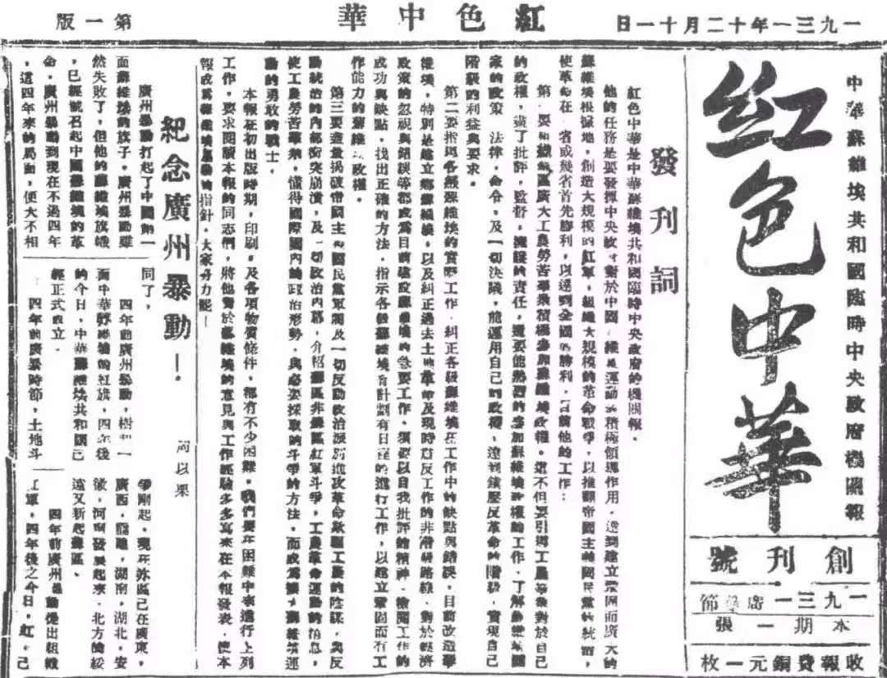
《长征日记》
- 材质：日记本纸质，牛皮纸封面
- 尺寸：长15厘米、宽10厘米、厚2厘米
- 记录时间：1935年10月至1936年10月
- 记录人：红四方面军某连指导员李明远
- 级别：国家一级文物
- 收藏单位：会宁红军长征胜利纪念馆
《长征日记》是红四方面军某连指导员李明远在长征途中记录的日记，内容涵盖从1935年10月到1936年10月整整一年的长征历程，包括四川康北地区的艰苦跋涉、雪山草地的严酷考验、甘肃地区的战斗历程，以及最终在会宁会师的历史时刻。
李明远在日记中详细记录了部队的行军路线、战斗情况、战士思想动态以及自己的感悟。1937年李明远在一次战斗中牺牲，日记由战友保存，后辗转送到其家人手中，2015年由其子女捐赠给纪念馆。
日记中关于会宁会师的记录尤为珍贵："1936年10月9日，晴，抵达会宁县城，与红一方面军会师。战士们相互拥抱，有的喜极而泣。城内百姓夹道欢迎，送来热水和干粮。今日长征终有尽头，然革命之路方起步。"
日记还记录了会师联欢大会的盛况，以及战士们对未来的憧憬。日记本虽有些页面受潮变形，但字迹大多清晰，是了解红军战士内心世界的珍贵资料。
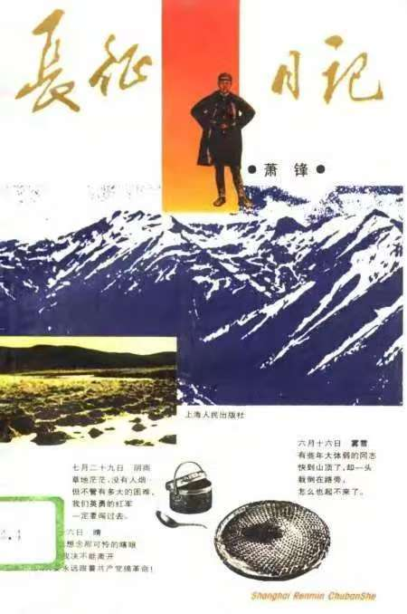
日用品类
红军军用水壶
- 材质：铝制，帆布背带
- 尺寸：直径8厘米，高20厘米，容量约800毫升
- 生产时间：1935年（红军兵工厂自制）
- 使用人：红四方面军某部战士
- 级别：国家二级文物
- 收藏单位：会宁红军长征胜利纪念馆
这只军用水壶是红军战士在长征途中使用的个人装备，由于物资极度匮乏，大部分水壶是由红军兵工厂用缴获的铝材手工打造。水壶表面刻有红星标志，壶盖用绳索连接，防止丢失。
水壶的主人是一名红四方面军战士，1936年10月在会宁会师后，因伤无法继续行军，将水壶送给当地村民张大爷。张大爷视水壶为珍宝，临终前交给孙子，2010年由其孙捐赠给纪念馆。
水壶表面有多处凹痕和划痕，壶身一侧有一道明显的裂纹，推测是在战斗中被弹片击中后修复。壶底有"1935"的字样刻印，表明生产年份。帆布背带已磨损严重，但仍保持了基本的承重能力。
壶内部有水垢和锈迹，表明曾经装过水和其它液体。水壶虽然没有华丽的外观，但它见证了红军战士在艰苦环境中的坚韧不屈，是长征精神的物质体现。
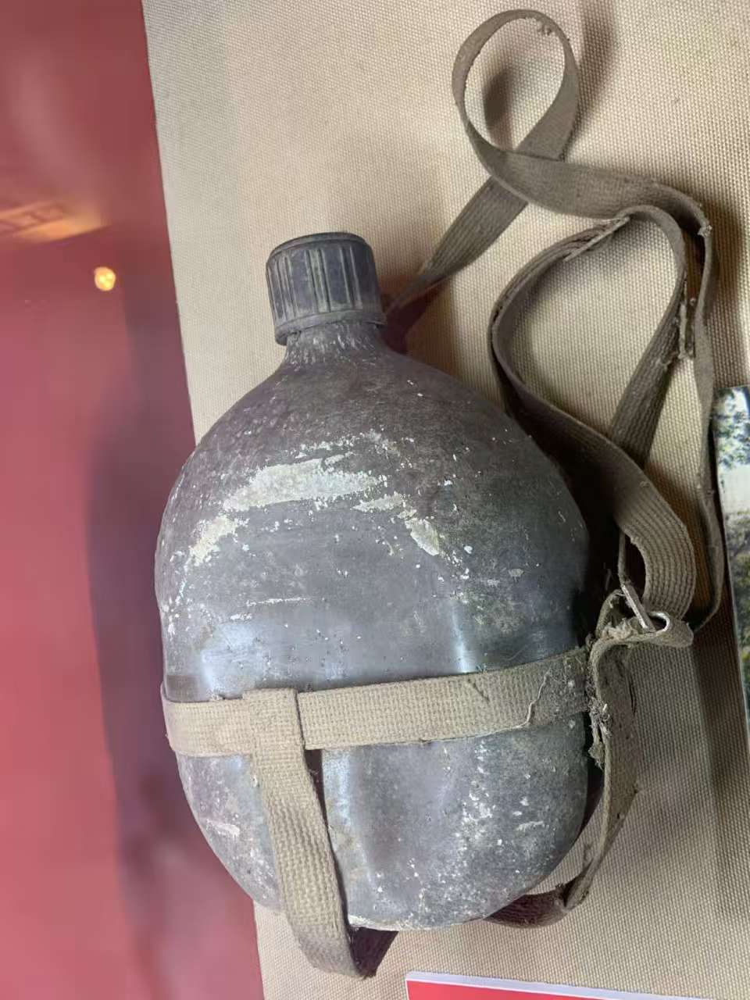
红军军服
- 材质：粗布，铜纽扣
- 尺寸：上衣长70厘米，袖长60厘米；裤子长100厘米
- 生产时间：1936年（红军被服厂制作）
- 使用人：红一方面军某部战士
- 级别：国家二级文物
- 收藏单位：会宁红军长征胜利纪念馆
这套红军军服是1936年会宁会师时，红一方面军战士穿着的服装。由于当时物资极度匮乏，红军军服多采用粗布制作，样式简单，颜色多为灰色或土黄色，便于在野外隐蔽。
这套军服的主人是一名红一方面军战士，在会宁会师后，因伤病留在当地，军服被当地村民保存。2012年，其家人在整理老屋时发现了这套军服，并捐赠给纪念馆。
上衣为立领、对襟设计，胸前有四个口袋，方便携带小件物品。衣领和袖口有红色布条装饰，象征革命。裤子为直筒设计，腰间有布带调节松紧。整套服装制作工艺简单，但实用性强。
军服上有明显的磨损痕迹，袖口和膝盖部位有补丁，表明经过长期使用和多次修补。上衣左胸口袋上方有一个用红线绣制的五角星，虽然已经褪色，但仍能辨认出形状。
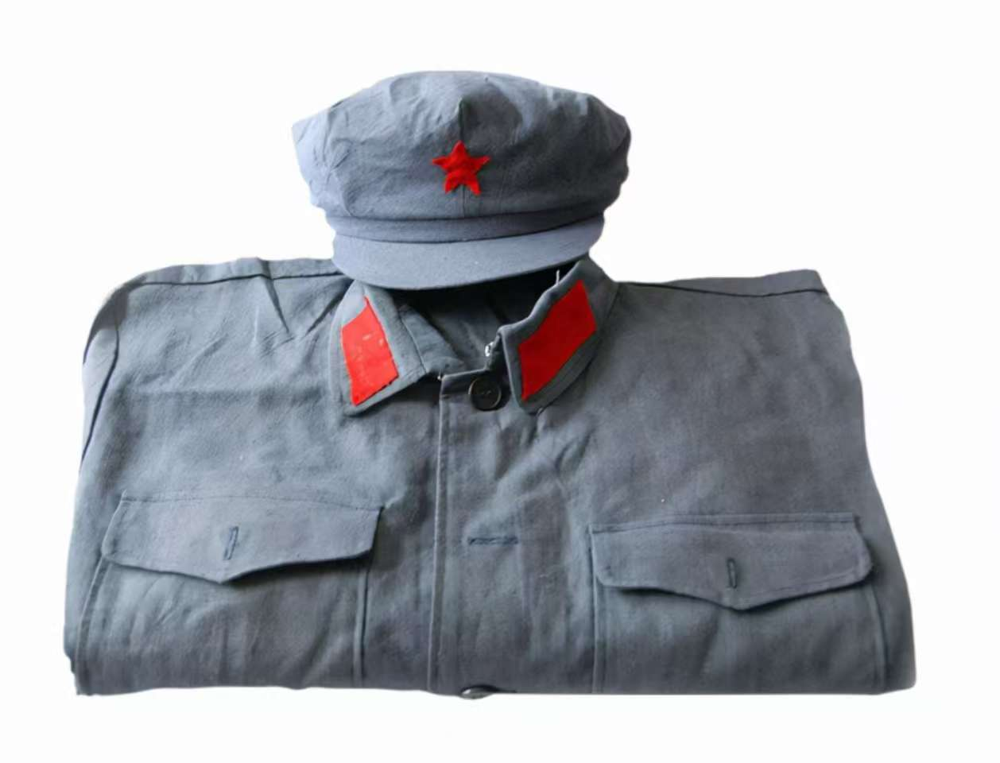
武器装备类
红军"汉阳造"步枪
- 型号：汉阳八八式步枪（仿制德国1888式委员会步枪）
- 材质：钢材，木质枪托
- 口径：7.92毫米
- 全长：1250毫米，枪管长740毫米
- 生产时间：1930年代初（汉阳兵工厂制造）
- 级别：国家一级文物
- 收藏单位：会宁红军长征胜利纪念馆
这把"汉阳造"步枪是红军在1935年攻打湘江时缴获的国民党军武器，后来装备给红四方面军战士使用。由于红军武器装备极度匮乏，"汉阳造"成为红军主力步枪之一，在长征和后续作战中发挥了重要作用。
步枪的使用者是红四方面军某部班长，在1936年会宁会师后的山城堡战役中负伤，步枪留在会宁。当地农民李大爷将其埋藏，直到1980年代被发现，后捐赠给纪念馆。
这把步枪见证了多次重要战役，包括湘江战役、强渡大渡河、飞夺泸定桥等。枪托上有用刀刻下的标记，记录了这些战役的时间和地点。枪身有多处弹痕，表明曾经历激烈战斗。
枪管内侧有轻微腐蚀，但总体保存完好。枪托上刻有"红军必胜"四个字，虽已模糊，但仍能辨认。这把步枪不仅是武器，更是红军战士坚定信念的象征。
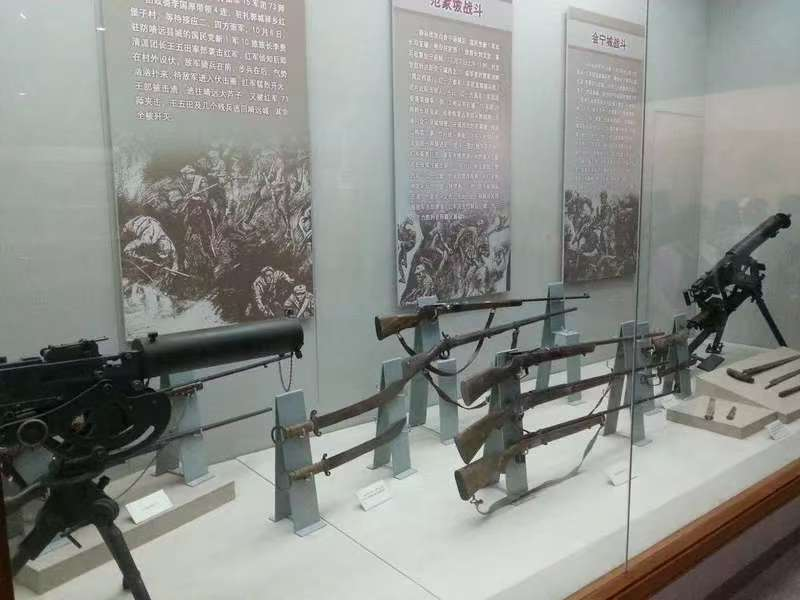
红军望远镜
- 产地：德国（蔡司公司制造）
- 材质：金属外壳，光学玻璃
- 放大倍数：6倍
- 尺寸：长15厘米，直径5厘米
- 生产时间：1920年代
- 级别：国家二级文物
- 收藏单位：会宁红军长征胜利纪念馆
这副德国蔡司望远镜是红军在1936年攻克腊子口时缴获的国民党军装备，因其性能优良，被分配给红一方面军某部指挥员使用，用于观察敌情、侦察地形。
在会宁会师时，指挥员使用这副望远镜观察了会宁城周围的地形，为会师行动的顺利进行提供了重要保障。1937年抗日战争爆发后，指挥员将望远镜交给当地地下党员保管，直到新中国成立后，被捐赠给纪念馆。
在当时红军装备落后的情况下，这副高质量的望远镜具有极其重要的军事价值。它不仅在战斗中用于观察敌情，在行军中用于勘察地形，还在会宁会师时用于协调部队行动。
望远镜金属外壳有多处划痕，但镜片保存完好，至今仍能正常使用。镜身刻有德国蔡司公司的标志和编号，是德国制造的精良产品。这副望远镜见证了红军以弱胜强、最终取得胜利的历史。
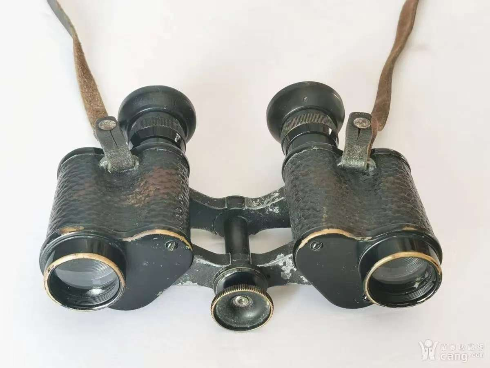
仪式用品类
会宁县苏维埃政府印章
- 材质：梨木
- 尺寸：通高8厘米，印面边长5厘米（正方形）
- 工艺：阳刻宋体
- 年代：1936年10月
- 级别：国家二级文物
- 收藏单位：会宁红军长征胜利纪念馆
1936年10月，红一方面军攻占会宁后，立即成立会宁县苏维埃政府，选举当地农民张振财为主席。为开展工作，红军刻印厂赶制了这枚印章，用于发布政令、发放土地证、签订协议等。
1936年11月，红军撤离会宁后，苏维埃政府转入地下，印章由副主席王进宝秘密保管。1937年春，国民党军队"清剿"时，王进宝将印章埋在自家后院老槐树下，直至1983年县城改造时被施工队发现，后移交纪念馆。
印章边缘有明显磨损，印面"会"字左侧、"府"字下方有轻微磕碰痕迹，推测是频繁使用及埋藏过程中造成。据考证，该印章在短短1个月内使用超200次，主要用于：

会师联欢会供桌
- 材质：榆木
- 尺寸：长1.8米、宽0.8米、高0.9米
- 年代：清代中期（原文庙供桌）
- 级别：国家三级文物
- 收藏单位：会宁红军长征胜利纪念馆
这张供桌原置于会宁文庙大成殿，用于祭祀孔子。1936年10月10日，红一、红四方面军召开会师联欢大会时，将其作为主席台，摆放中央贺电、授旗仪式用旗、慰问品等。
大会结束后，供桌被当地群众保护起来，避免了被国民党军队破坏。1958年，会宁县政府将其移交纪念馆，成为会师大会的重要实物见证。
供桌桌面左侧有"红军万岁"4个刻痕，字体歪斜，推测是当年红军战士用刺刀即兴刻写；右侧有一处直径约5厘米的烧灼痕迹，据考证是联欢大会时点蜡烛所致。
桌腿有3处捆绑痕迹，可能是红军运输供桌时留下的。桌面下方还发现残留的红布碎片，与会师时使用的红旗材质一致，进一步印证了其历史价值。

布谷鸟报时钟
- 产地：德国（1920年代生产）
- 材质：黄铜外壳，玻璃面板
- 尺寸：直径15厘米，厚8厘米
- 功能：每整点发出"布谷"声，误差≤3分钟/天
- 年代：1920年代（1936年被红军缴获）
- 级别：国家二级文物
- 收藏单位：会宁红军长征胜利纪念馆
1936年9月，红四方面军在甘肃通渭县与国民党军作战时，缴获了这只德国产布谷鸟报时钟。由于其计时精准，被用作会宁前线指挥部的军用时钟，用于协调部队行动、传达作战命令。
1937年3月，红军东渡黄河时，因携带不便，将时钟交给当地地下党员李生贵保管。李生贵将其藏在自家地窖中，定期上弦维护，直至1950年新中国成立后，将时钟捐赠给政府，后移交纪念馆。经修复，时钟至今仍能正常运行。
在缺乏精准计时工具的战争年代，这只时钟为红军提供了可靠的时间参考：
时钟底部刻有国民党军队编号"17-234"，是其原所属部队的标识，也成为红军缴获战利品的重要佐证。
红军纪念勋章
- 材质：铜质，红珐琅
- 尺寸：直径4.5厘米，厚0.3厘米
- 形状：圆形，五角星形
- 铭文：正面"红军三大主力会师纪念"，背面"1936年10月"
- 级别：国家三级文物
- 收藏单位：会宁红军长征胜利纪念馆
这枚纪念勋章是红军三大主力会师后，中央军委为表彰参加长征和会师的红军战士而制作的。由于当时物资匮乏，这批勋章数量有限，仅发放给红军各级指战员和部分代表。
勋章的获得者是一名红四方面军连长，在会师后获颁此勋章。1937年抗日战争爆发后，他在一次战斗中负伤，被安排在当地群众家中养伤，将勋章交给房东保管。2008年，房东的孙子在修缮房屋时发现了这枚勋章，并捐赠给纪念馆。
勋章为铜质，五角星形状，象征红军的革命方向。中心为红色珐琅底，上有金色镰刀锤子标志，代表中国共产党。五角星五个角上分别刻有"中央"、"红一"、"红二"、"红四"、"会师"字样，标明参与会师的部队。
勋章背面刻有"红军三大主力会师纪念"和"1936年10月"字样，以及编号"0089"。勋章边缘有轻微磨损，但整体保存完好，是红军会师历史的重要实物见证。
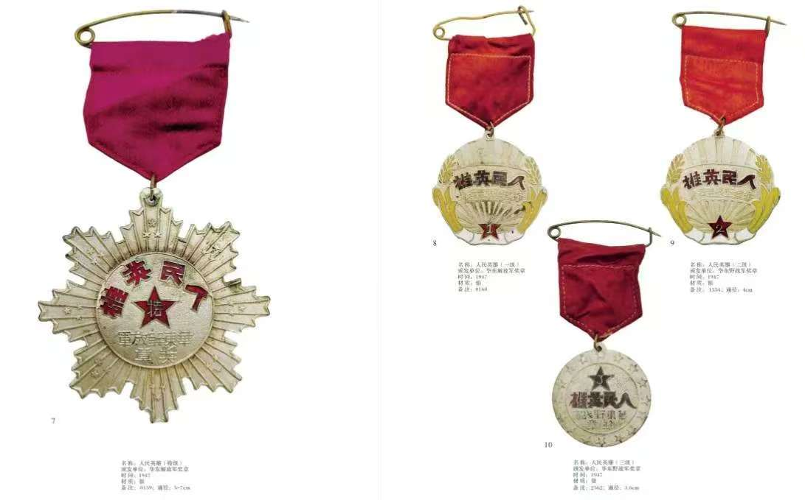
战地家书 · 纸短情长
致吾妻书
1936年10月 · 会宁县城
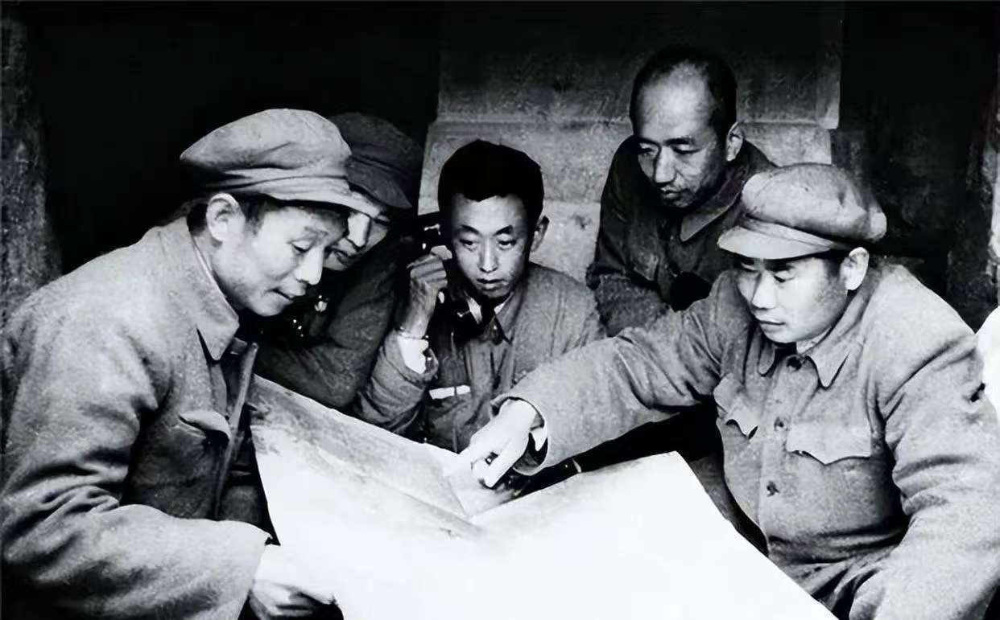
吾妻亲启：
今日会宁天气转寒，晨起饮小米粥时，见窗外百姓送棉衣至营中，心中暖意自生。我军与红一方面军已于昨日会师，城头红旗招展，战士们相拥而泣，此景毕生难忘。
念及家中老母与你，小儿应已会喊"爹爹"？然国难当头，倭寇未驱，我辈岂能退缩？若我不幸未能归乡，望你带好孩儿，教他读书识字，勿忘今日之苦，为中华之崛起而读书。
待山河无恙，我必归乡，与你共种田亩，看小儿长大。
夫 德山 字
1936年10月10日
家书背景
写信人王德山，红四方面军第31军战士，四川巴中人，1933年入党。1936年10月会师后，他随部队参加了山城堡战役，1937年改编为八路军后，赴山西抗日前线，1938年在平型关大捷中牺牲，年仅28岁。
人物结局
王德山牺牲后，战友将其遗物寄回故乡，妻子按其嘱托抚养儿子成人。儿子王建国后来参军入伍，1950年参加抗美援朝战争，1953年凯旋，实现了父亲"为中华之崛起而奋斗"的遗愿。
致父母书
1936年10月 · 会宁前线战壕

爹娘膝下：
今晨攻克会宁城外小堡子，缴获敌军步枪十余支，战士们士气大振。城头百姓箪食壶浆相迎，有老丈赠我布鞋一双，虽针脚粗糙，却暖至心底，恍如娘亲手所制。
爹的腿伤可曾好转？去年离家时所留草药方，若用完可托人至县城药铺抓取。娘莫再为我熬夜缝补，军中已发冬装，虽单薄却能御寒。
昨日联欢，老班长用树叶吹奏《走西口》，忽念咱家老槐树，若我牺牲，望葬于树下，守着咱的庄稼地；若胜利，定归乡陪爹娘种麦、晒粮。
儿 小勇 叩上
1936年10月8日
家书背景
写信人李小勇，红一方面军红一军团战士，甘肃会宁本地人，1935年参加红军。1936年10月，他随部队攻占家乡会宁，家书是在会宁城外战壕中写下的。
人物结局
李小勇在会师后留在家乡开展地方工作，1937年加入八路军陇东游击队，1945年抗战胜利后，担任会宁县武装部长。新中国成立后，他致力于会宁的建设和发展，1986年病逝，享年72岁，葬于会宁红军烈士陵园。
致战友书
1936年10月 · 老君坡营地

子轩吾弟：
老君坡一见，恍如隔世！还记得三年前夹金山上，你背我过雪坡，雪水浸透你的棉衣，你却笑称"身子热"；泸定桥边，你拉我上岸，手臂被弹片划伤仍冲锋在前。如今你我各率部队会师会宁，不负当年"同赴国难"之约。
缴获的德国电台已调试完毕，今夜可收陕北消息。昨日见你部战士多穿单衣，已令后勤送棉衣二十件至你营，天冷需保重身体。
他日若并肩抗日，愿共饮黄河水；若不幸捐躯，亦当同入烈士册，让后人知我红军兄弟情。
兄 建明 谨书
1936年10月16日
家书背景
写信人张建明，红一方面军红十五军团电台队长，陕西米脂人；收信人陈子轩，红四方面军电台队副队长，四川阆中人。二人同为1933年参加红军，在长征途中结下深厚友谊。
人物结局
1937年，张建明与陈子轩均编入八路军总部电台队，共同参与了平型关、百团大战等战役的通信保障工作。1942年，陈子轩在反"扫荡"战斗中牺牲；张建明则一直从事通信工作，新中国成立后担任邮电部副部长，1998年逝世，享年85岁。
致子女书
1936年10月 · 会宁文庙
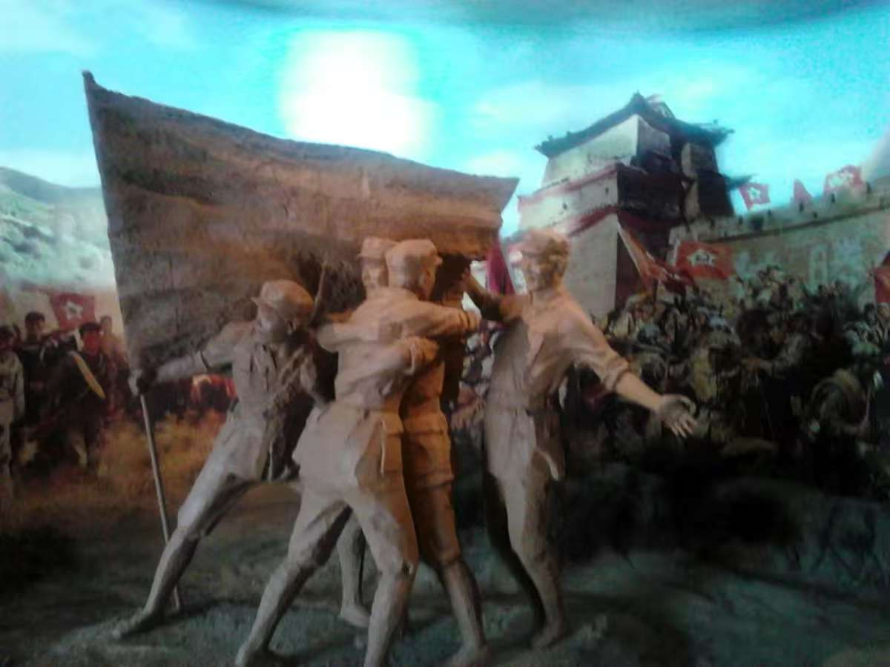
明儿、芳儿吾儿：
爹此刻在会宁文庙给你们写信，殿外红旗飘扬，战士们正排练节目，准备明日联欢会。你们在家要听娘的话，明儿要帮娘喂猪，芳儿要好好读书，莫让娘操心。
爹这次出来，是为了让天下的孩子都能吃饱饭、上学堂。你们若想爹，就看天上的星星，爹也会在夜里看星星，想着你们的模样。
待革命胜利，爹一定回家，带你们去县城买糖吃，给你们讲长征路上的故事。
爹 志远
1936年10月9日
家书背景
写信人刘志远，红二方面军第6军团教导员，湖南桑植人，贺龙的同乡。1935年参加长征，1936年10月随红二方面军抵达会宁附近，家书是在会宁文庙休整时写下的。
人物结局
1937年，刘志远随部队改编为八路军第120师，赴晋西北抗日前线。1940年，他在一次战斗中身负重伤，后转业到地方工作，1945年抗战胜利后回到家乡，与子女团聚。新中国成立后，他担任桑植县教育局局长，致力于普及教育，实现了"让天下孩子都能上学堂"的承诺，1979年病逝，享年68岁。
红色人物 · 精神脊梁
贺龙（1896-1969）

湖南桑植人，出身贫苦农民家庭，13岁闯荡江湖，练就一身武艺。1916年，他以两把菜刀闹革命，组织农民武装；1927年参与领导南昌起义，担任起义军总指挥，同年加入中国共产党。
1930年起，他历任红二军团总指挥、红二方面军总指挥，率部转战湘鄂川黔苏区；1935年11月，率红二、六军团开始长征，历经千难万险，于1936年10月抵达会宁附近，与红一方面军会师。
抗日战争时期，任八路军第120师师长，开辟晋绥抗日根据地；解放战争时期，任西北野战军第一副司令员，参与解放大西北；新中国成立后，任国务院副总理、国家体委主任等职，1955年被授予元帅军衔。
贺龙在会宁会师中发挥了关键作用：
- 坚决反对张国焘的分裂主义：1936年7月，红二、四方面军在甘孜会师后，张国焘企图拉拢红二方面军支持其西进计划，贺龙明确表示"坚决拥护中央北上抗日的战略方针"，与任弼时、关向应等一起，说服红四方面军多数将领同意北上。
- 协调红二、四方面军行动：长征途中，贺龙多次与张国焘沟通，化解两军矛盾，确保部队团结；1936年9月，他率红二方面军突破国民党军封锁，按时抵达会宁地区，为三大主力会师创造了条件。
- 稳定部队士气：面对长征中的艰难险阻，贺龙始终身先士卒，鼓舞战士们的斗志。会师后，他积极协调部队休整补充，为后续抗日作战奠定了基础。
贺龙元帅的革命精神被永远铭记：
- 会宁会师旧址建有"贺龙纪念亭"，陈列其生平事迹及相关文物；
- 湖南桑植县建有贺龙纪念馆、贺龙故居，被列为全国爱国主义教育示范基地；
- 其"两把菜刀闹革命"的英雄事迹被编入中小学教材，"坚定信念、团结奋斗、不怕牺牲、实事求是"的贺龙精神，成为中华民族的宝贵精神财富。
1969年6月9日，贺龙元帅被迫害致死，1978年12月平反昭雪，恢复名誉。
任弼时（1904-1950）

湖南湘阴人（今属汨罗市），16岁加入中国共产党，是中国共产党早期主要领导人之一，党内著名的"五老"之一。1920年赴苏联留学，1924年回国后，历任共青团中央总书记、中央政治局委员等职。
1935年11月，任弼时率红二、六军团开始长征，担任红二方面军政治委员，与贺龙共同指挥部队转战湘鄂川黔、滇黔川等地区。1936年7月，在甘孜与红四方面军会师后，他坚决反对张国焘的分裂行为，维护了红军的团结。1936年10月，率红二方面军抵达会宁附近，与红一方面军会师。
抗日战争时期，任八路军政治部主任、中央秘书长等职，协助毛泽东处理中央日常工作；解放战争时期，参与指挥辽沈、淮海、平津三大战役；1949年，参与筹备中国人民政治协商会议和中华人民共和国成立。1950年10月27日，因长期超负荷工作，积劳成疾，在北京逝世，年仅46岁。
任弼时在会宁会师中的核心贡献：
- 坚决抵制张国焘分裂主义：1936年7月甘孜会师后，张国焘向红二方面军散发反对中央的文件，任弼时立即下令收缴，并明确表示"红二方面军坚决拥护中央北上抗日的路线，绝不参与任何分裂党的活动"，有效遏制了分裂主义的蔓延。
- 加强红军内部团结：任弼时多次与张国焘、朱德、刘伯承等沟通，协调红二、四方面军的关系，推动两军共同北上。他还注重加强红二方面军的思想政治工作，提高部队的凝聚力和战斗力。
- 保障会师顺利实现：1936年9月，任弼时与贺龙共同指挥红二方面军突破国民党军的围追堵截，克服高原缺氧、物资匮乏等困难，按时抵达会宁地区，与红一方面军胜利会师，完成了三大主力会师的最后一步。
任弼时的革命精神和崇高品德被世代传颂：
- 毛泽东评价他"他是我们党的骆驼，中国人民的骆驼，担负着沉重的担子，走着漫长的艰苦的道路，没有休息，没有享受，没有个人的任何计较"；
- 会宁会师旧址设有"任弼时事迹陈列室"，展示其在会师期间的重要贡献；
- 湖南汨罗市建有任弼时纪念馆、任弼时故居，被列为全国爱国主义教育示范基地；
- 其"骆驼精神"——谦虚谨慎、艰苦奋斗、勇于担当、无私奉献，成为中国共产党人的精神象征，激励着一代又一代人砥砺前行。
周桂兰（1898-1986）

甘肃会宁县城关镇人，出身贫寒，丈夫早年去世，独自抚养3个子女，靠种地、纺线维持生计。1936年10月红军进驻会宁时，她积极参与支援红军的工作，成为当地群众支援红军的杰出代表。
红军撤离后，周桂兰冒着生命危险保护红军遗留的党员登记表，长达70年。在国民党"清乡"期间，她多次遭受严刑拷打，却始终坚守秘密，从未透露登记表的下落。1986年临终前，她嘱托子女将登记表交给政府，让后人铭记红军的革命历程和军民鱼水情。
周桂兰一生勤劳朴实、为人正直，深受当地群众爱戴。她常对子女说："红军是为老百姓打天下的，我们不能忘了他们的恩情。"1986年，周桂兰病逝，享年88岁，葬于会宁县城郊公墓。
周桂兰支援红军、保护文物的事迹：
- 主动腾出家中土炕给受伤红军战士休养，每天熬小米粥、洗绷带，精心照料伤员。在她的带动下，邻里们也纷纷行动起来，为红军送粮、送衣、护理伤员。
- 秘密保存红军党员登记表70年。1936年10月红军撤离时，一名战士将党员登记表遗落在她家，周桂兰发现后，担心被国民党搜走，将其缝在枕头夹层中。国民党"清乡"时，多次搜查她家，她始终守口如瓶，即便被严刑拷打也未透露半句。
- 传承红军精神。周桂兰经常给子女和乡亲们讲述红军的故事，教育他们要珍惜今天的幸福生活，永远铭记红军的恩情。她的子女后来都积极参与革命和建设工作，成为对社会有用的人。
周桂兰的事迹被广泛传播，成为军民鱼水情的生动写照：
- 会宁红军长征胜利纪念馆设有"周桂兰事迹展区"，展示她保护的党员登记表及相关实物、照片；
- 2006年，周桂兰的子女将党员登记表捐赠给纪念馆，该登记表成为国家一级文物，被列为"会宁会师十大珍贵文物"之一；
- 会宁县委、县政府授予周桂兰"支援红军模范"称号，她的事迹被编入会宁县地方志和中小学乡土教材，激励着当地群众传承红色基因、弘扬革命精神。
徐向前（1901-1990）
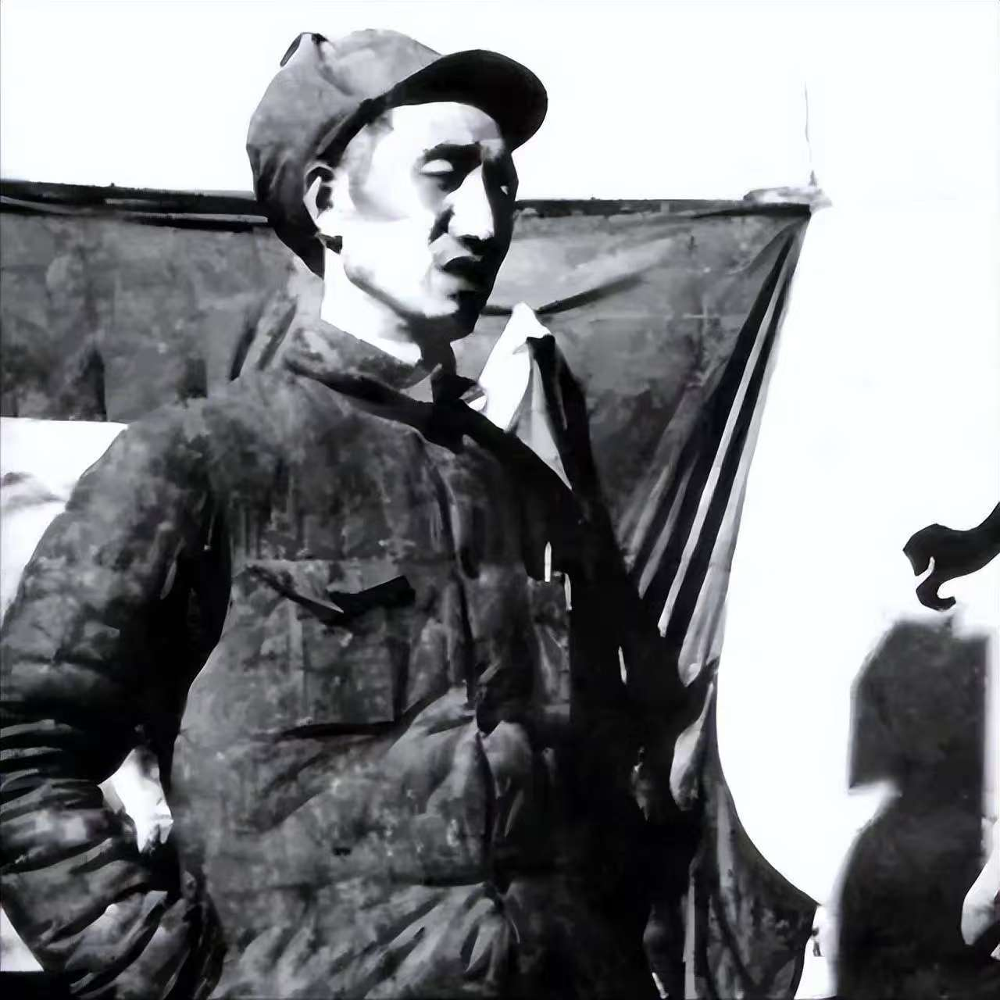
山西五台人，黄埔军校第一期毕业，是中国人民解放军的杰出军事家、开国元帅。1927年加入中国共产党，历任红四方面军总指挥、八路军第129师副师长、华北军区副司令员等职。
1935年5月，徐向前率红四方面军开始长征，多次担任前锋部队指挥，突破敌军防线，为红军北上开辟了道路。1936年10月，他率红四方面军先头部队抵达会宁，与红一方面军胜利会师，是最早实现会师的红军高级将领之一。
抗日战争时期，徐向前率部开辟晋察冀抗日根据地，参与指挥平型关大捷、百团大战等战役；解放战争时期，参与指挥临汾战役、太原战役等，为解放华北作出了重要贡献；新中国成立后，任人民革命军事委员会副主席、国防部长等职，1955年被授予元帅军衔。1990年9月21日，徐向前元帅在北京逝世，享年89岁。
徐向前在会宁会师中的重要贡献：
- 率先实现红一、四方面军会师：1936年10月9日，徐向前率领红四方面军总指挥部抵达会宁县城，与红一方面军部队胜利会师，拉开了红军三大主力西北大会师的序幕。
- 坚决反对张国焘分裂主义：1935年以来，张国焘多次提出西进、南下等分裂党中央的主张，徐向前始终坚持原则，多次劝说张国焘放弃分裂行为，维护红军的团结统一。会师后，他积极协调红四方面军与其他部队的配合，确保了会师的顺利进行。
- 组织部队休整补充：会师后，徐向前立即组织红四方面军部队进行休整，补充粮食、衣物等物资，同时开展思想政治工作，稳定部队士气，为红军后续改编为八路军、投身抗日战争奠定了基础。
徐向前元帅的军事思想和革命精神影响深远：
- 会宁会师旧址建有"徐向前纪念广场"，矗立着徐向前元帅铜像，供后人瞻仰；
- 山西五台县建有徐向前纪念馆、徐向前故居，被列为全国爱国主义教育示范基地；
- 其军事著作《历史的回顾》《徐向前军事文选》等，成为研究中国革命战争史的重要文献；
- 徐向前元帅"对党忠诚、顾全大局、实事求是、艰苦奋斗"的革命精神，成为中国人民解放军的宝贵精神财富，激励着广大官兵为国防和军队现代化建设而奋斗。
红色精神 · 薪火相传
传承案例 · 红色教育
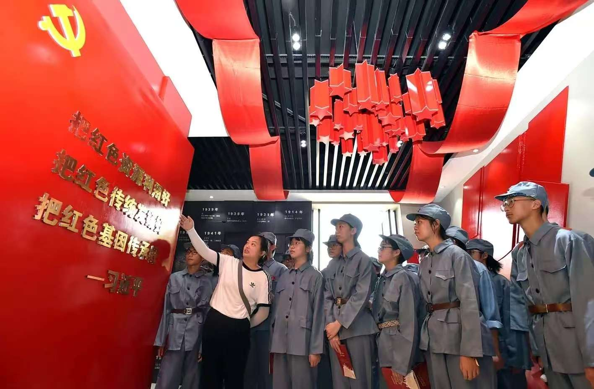
会宁依托"红军会宁会师旧址"，打造了全国知名的红色教育基地，每年接待数十万青少年研学团队和游客：
- 实景演出：推出《大会师》实景情景剧，还原1936年红军会师的历史场景，让观众身临其境感受革命岁月；
- 研学课程：开发"重走长征路""红军小战士体验"等特色课程，通过徒步、野营、手工制作等形式，让青少年在实践中感悟长征精神；
- 线上教育：搭建"会宁红色文化数字展馆"，通过VR、AR技术，让全球观众足不出户就能参观纪念馆、了解会师历史。
截至2024年，会宁红色教育基地已成为全国100多所高校、中小学的"爱国主义教育实践基地""党史学习教育基地"。
红色教育数据
数据来源：会宁红军长征胜利纪念馆2024年度统计报告
研学课程 · 实践育人
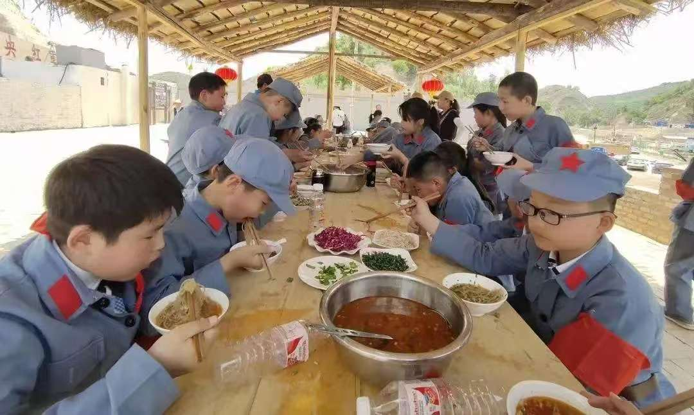
会宁红色研学课程以"沉浸式体验、实践性学习"为核心，涵盖3大系列、12门课程：
历史探究系列
- 《会宁会师历史考证》：通过查阅史料、走访老人，探究会师的历史背景和细节；
- 《红军文物背后的故事》：近距离观察文物，了解其历史价值和背后的革命故事。
实践体验系列
- 《红军粮制作》：学习制作小米粥、窝窝头、红军饼等当年红军的食物，感受艰苦岁月；
- 《战地救护模拟》：学习简单的战地救护知识，模拟红军伤员救治场景；
- 《重走长征路（会宁段）》：徒步穿越会宁境内的红军长征路线，体验红军行军的艰辛。
精神传承系列
- 《红色家书诵读》：朗读红军家书，体会革命先烈的家国情怀；
- 《长征精神演讲比赛》：结合研学经历，抒发对长征精神的理解和感悟。
红色文创 · 精神载体
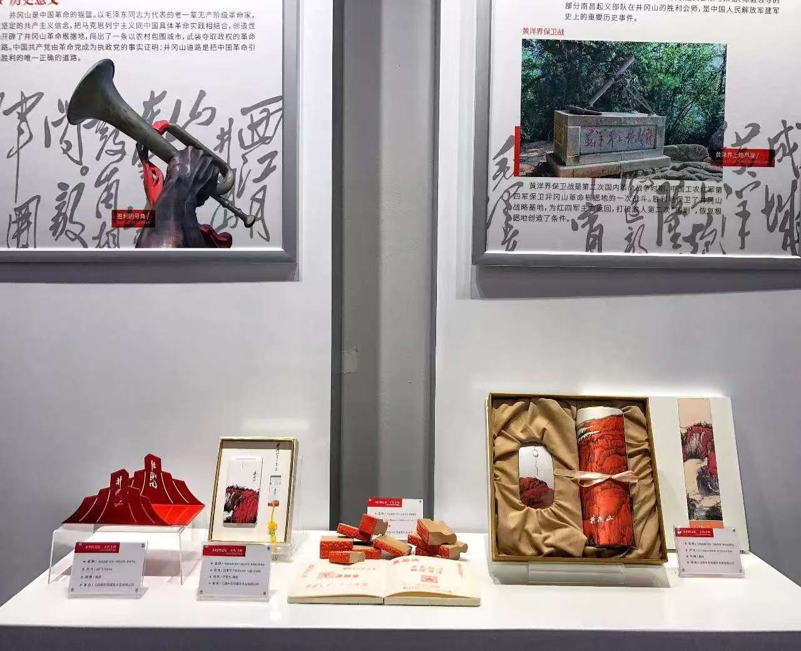
会宁将红色文化与现代设计相结合，开发了一系列红色文创产品，让红色精神融入日常生活：
纪念类
- 会师纪念徽章：以会宁会师旧址、红军军旗为设计元素，采用金属材质制作，做工精美；
- 长征路线地图摆件：以实木为底座，雕刻红军长征路线及重要节点，兼具收藏和装饰价值。
实用类
- 红色家书笔记本：封面印有红军家书节选，内页设置"红色感悟"书写区，适合学生和游客使用；
- 会师主题文具套装：包括钢笔、铅笔、橡皮、尺子等，设计融入红军元素，深受青少年喜爱；
- 红色文化U盘：以会宁苏维埃政府印章、红军党员登记表为造型，内置会宁会师历史资料、纪录片等数字内容。
非遗类
- 会宁剪纸（红军会师系列）：由当地非遗传承人制作，再现红军会师、军民联欢等历史场景；
- 刺绣香囊（红军元素）：采用传统刺绣工艺，绣有"红军万岁""会师会宁"等字样，香气宜人。
红色寄语 · 互动交流
截至2024年，已有超过10万名游客在留言板写下感悟，部分精选寄语：
"重走长征路，才真正体会到红军的艰辛与不易。作为新时代青年，我们要传承红色基因，为祖国的强大而努力！"——来自北京的中学生 李明
"每一件文物都是历史的见证，每一个故事都感人至深。会宁会师精神永远是我们前进的动力！"——来自上海的游客 王芳
"爷爷是老红军，今天带着孩子来会宁，就是想让他了解爷爷那一代人的革命历程，让红色精神代代相传。"——来自甘肃的游客 张强
互动体验 · 沉浸式感悟
会师场景复原 · 3D体验
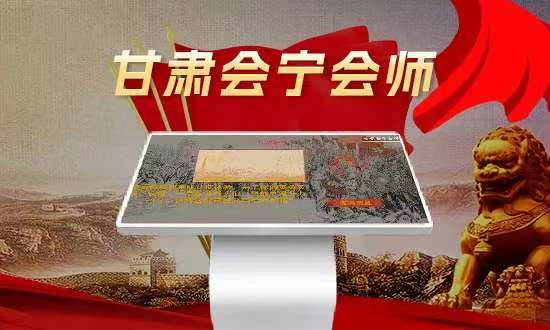
通过3D建模和VR技术，复原1936年10月10日会宁会师联欢大会的历史场景，扫码即可进入VR全景，身临其境感受会师的热烈氛围：
- 可自由切换视角，查看会场布局、红军战士和群众的神态动作；
- 点击场景中的人物、文物，可查看相关介绍和历史背景；
- 支持手机、平板、电脑等多种设备访问，无需下载额外APP。
扫码体验VR全景
红色音韵 · 历史回响
历史演讲资源
毛泽东关于会宁会师的历史讲话
毛泽东主席在会宁会师后发表的重要讲话，阐述会师的历史意义和未来展望
战场音效资源
战场音效集合
包含枪声、炮声等战场环境音效，重现长征路上的战斗场景
民间音乐资源
会宁当地民间音乐
富有地域特色的会宁民间音乐，展现当地文化底蕴和人民生活风貌
红军歌曲资源
红军革命歌曲
激昂奋进的红军革命歌曲，传递革命精神和必胜信念
红色音乐的文化价值
红军音乐是革命历史的重要组成部分，它不仅是战士们战斗生活中的精神支柱，也是传播革命思想、凝聚民心的重要媒介。在艰苦的长征路上，红军战士们用激昂的歌声鼓舞士气，用民间小调改编的红色歌曲拉近了与群众的距离。
会宁地区流传着许多与红军相关的民谣和歌谣，这些音乐作品记录了红军与当地人民的鱼水深情，展现了革命领袖的崇高形象，讴歌了红军战士的英雄事迹。这些音乐作品超越了时空限制，至今仍在激励着我们不忘初心、继续前进。
红色知识问答 · 趣味挑战
1. 红军三大主力会师的时间是？
2. 会宁会师中，红二方面军的总指挥是？
3. 周桂兰保护的红军文物是？
更多红色知识
通过互动问答，我们不仅了解了会宁会师的历史，还能感受到革命先辈的英勇无畏和坚定信念。红军三大主力会师是长征胜利的标志，也是中国革命走向新阶段的起点。
会宁会师的历史意义不仅在于军事上的胜利，更在于它展现了中国共产党领导下的红军团结一心、克服万难的革命精神。正是这种精神，支撑着中国共产党领导中国人民取得了革命、建设和改革的伟大胜利。
今天，我们学习这段历史，不仅是为了了解过去，更是为了汲取前进的力量，在新的征程上继续发扬不畏艰难、团结奋斗的红军精神。
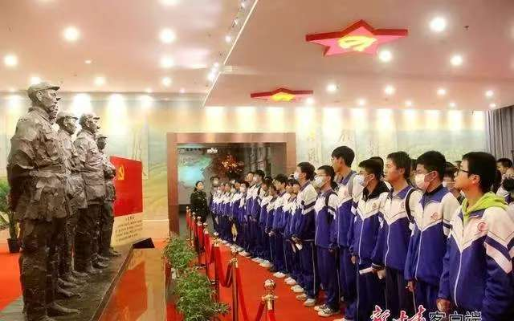
数字档案 · 交互探索
会宁会师数字档案馆
珍贵历史文献
收录了1936年会宁会师期间的电报、命令、信件等原始文件，通过高清数字化技术保存，可在线阅览原文、翻译和注释
历史影像库
收集整理了会宁会师相关的历史照片、影像资料500余件，包括会师现场、红军战士、当地群众等珍贵画面
红军战士名录
记录了参与会宁会师的红军战士姓名、籍贯、生平事迹等信息，建立可检索的数据库，方便后人寻根溯源
交互功能
智能检索
支持关键词、时间、地点、人物等多种检索方式，快速定位所需资料
地理信息
结合GIS技术，在地图上标注会师地点、行军路线，直观展现历史事件空间分布
社交分享
支持将发现的史料分享到社交媒体，传播红色文化，扩大社会影响
每日在线人数：约1,200人 | 今日访问量：约8,500次
数字档案建设历程
会宁会师数字档案馆建设项目始于2018年，旨在通过数字化技术保护、展示和传播会宁会师这一重要历史事件的珍贵资料。项目组历时5年，完成了以下工作：
- 资料收集：走访全国各地档案馆、纪念馆，征集与会宁会师相关的历史文献、照片、实物等资料3,000余件
- 数字化处理：采用高清扫描、3D建模等技术，对所有资料进行数字化处理，确保历史信息的永久保存
- 平台开发：开发集浏览、检索、互动于一体的数字平台，支持多种终端访问
- 内容整理：邀请党史专家、军事史学者对资料进行整理、校对、注释，确保史实准确性
数字档案馆的建立，不仅是对革命历史的数字化保护，更是为了让更多人能够便捷地了解和学习会宁会师的历史，传承红色基因，弘扬革命精神。